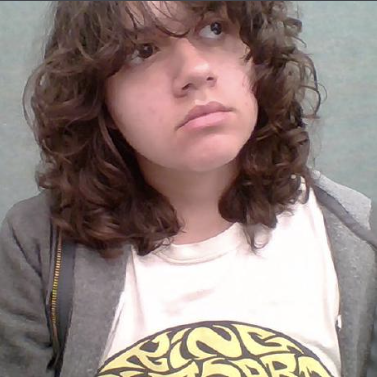
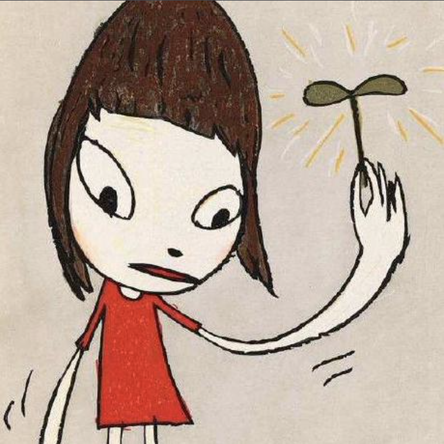
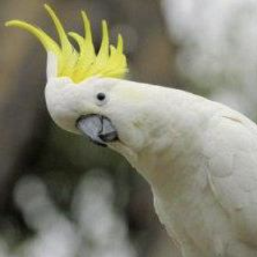

When looking for sources, just typing into any browser "Pokémon Black and White Game Texts" can easily give you the English files to work with, but what about the translations?
For the German translations, the game does have an official German version that was able to have text ripped from the files and posted to the internet, however, the same cannot be said for Arabic. To this day, an official Arabic Pokéemon Black and White game has never been in development, but there are traces of Arabic and Pokémon on the internet.
Using the Poké Corpus β allowed for text rips of both the English and German games to be easily accessed.
Since no official source of Arabic Pokémon Black and White exsist. Online document translations had to be used to convert the English files into Arabic.
AntConc is a corpus analysis toolkit that would scan through the translated documents we had and would give us data to work with. The data being the adjectives in translations slapped onto the Google Document that you can scroll through on the Index, German, and Arabic pages
Project Leader, Analyzer of the German Documents, Main contributor to website's development
Project Co-Leader and Reviver, Analyzer of the Arabic Documents, Main contributor to website's development

Project Contributor, Coding and sourcing of text documents

Project Contributor, Coding and sourcing of text documents

DIGIT Professor and Project Organizer
During the intitial development of this project, the idea was nearly scrapped, no development was made much in the months of February and March, this project was just a concept, despite sitting on the backburner for so long, this project was never truly out of the picture. With some renewed motivation through these tough times, the project is now fully functional and brought into the light like it should've been. I've decided to nickname this project, Purple Soul in reference to the purple soul trait from the Indie game Undertale, as Persistance and resilience only come from having been given the chance to work through difficult problems. This project would be non-exsistant if it weren't for perseverance and dedication.